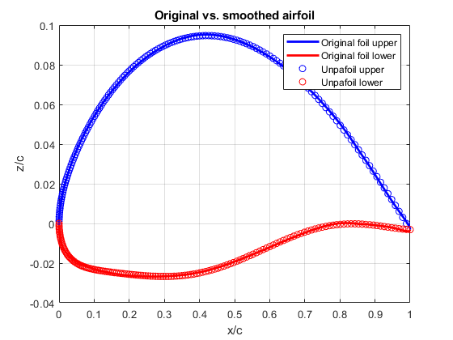
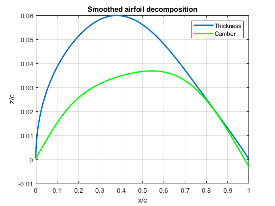
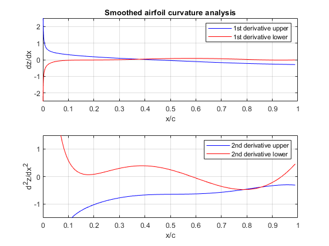

clear all;
close all;
clc
myfile = '64A612.dat';
Airfoil=load(myfile);
fprintf('\n *********************** IMPORTANT **************************');
fprintf('\n * Airfoil coordinates must be supplied in 2 columns *');
fprintf('\n * 1) Lower TE --> LE --> Upper TE (Clokwise) *');
fprintf('\n * 2) Upper TE --> LE --> Lower TE (Counter-clokwise) *');
fprintf('\n ************************************************************');
fprintf('\n ');
ik=2;
k=1;
BO=5;
new_num_pts=300;
new_num_pts = round(new_num_pts /2.);
SpacingLaw = 3;
switch k
case 1
N1=0.5;
N2=1.0;
case 2
N1=0.5;
N2=0.5;
case 3
N1=1.0;
N2=1.0;
case 4
N1=0.75;
N2=0.75;
case 5
N1=0.75;
N2=0.25;
case 6
N1=1.0;
N2=0.001;
case 7
N1=0.001;
N2=0.001;
end
Re=1e6;
x=Airfoil(:,1);
y=Airfoil(:,2);
npt=length(x);
[xmin,ixmin]=min(x);
[xmax,ixmax]=max(x);
chord=xmax-xmin;
if ik==1
for i=1:ixmin
xl(i)=(x(i)-xmin)/chord;
yl(i)=(y(i)-y(ixmin))/chord;
end
npt_lower=length(xl);
for i=ixmin:npt
xu(i-ixmin+1)=(x(i)-xmin)/chord;
yu(i-ixmin+1)=(y(i)-y(ixmin))/chord;
end
npt_upper=length(xu);
dzTEu=(y(npt)-y(ixmin))/chord;
dzTEl=(y(1)-y(ixmin))/chord;
end
if ik==2
j=0;
for i=npt:-1:ixmin
j=j+1;
xl(j)=(x(i)-xmin)/chord;
yl(j)=(y(i)-y(ixmin))/chord;
end
npt_lower=length(xl);
j=0;
for i=ixmin:-1:1
j=j+1;
xu(j)=(x(i)-xmin)/chord;
yu(j)=(y(i)-y(ixmin))/chord;
end
npt_upper=length(xu);
dzTEu=(y(1)-y(ixmin))/chord;
dzTEl=(y(npt)-y(ixmin))/chord;
end
for i=1:npt_upper
for r=0:BO
K(r+1)= factorial(BO)/(factorial(r)*(factorial(BO-r)));
S(r+1)=xu(i)^r*(1-xu(i))^(BO-r);
A(i,r+1)=xu(i)^N1*(1-xu(i))^N2*K(r+1)*S(r+1);
end
B(i)=yu(i)-xu(i)*dzTEu;
end
Aupper=pinv(A)*B';
clear K;
clear S;
clear A;
clear B;
for i=1:ixmin
for r=0:BO
K(r+1)= factorial(BO)/(factorial(r)*(factorial(BO-r)));
S(r+1)=xl(i)^r*(1-xl(i))^(BO-r);
A(i,r+1)=xl(i)^N1*(1-xl(i))^N2*K(r+1)*S(r+1);
end
B(i)=yl(i)-xl(i)*dzTEl;
end
Alower=pinv(A)*B';
xend=1.0;
xstart=0.0;
xnew=Point_Distribution(xstart,xend,new_num_pts,SpacingLaw);
new_num_pts=length(xnew);
n_check_pt=6;
xcheck(1)=0.0125;
xcheck(2)=0.90;
xcheck(3)=0.95;
xcheck(4)=0.99;
xcheck(5)=0.0015;
xcheck(6)=0.06;
for i=1:new_num_pts
supp=0.0;
slow=0.0;
sthi=0.0;
scam=0.0;
for r=0:BO
K(r+1)= factorial(BO)/(factorial(r)*(factorial(BO-r)));
S(r+1)=xnew(i)^r*(1-xnew(i))^(BO-r);
slow=slow+K(r+1)*S(r+1)*Alower(r+1);
supp=supp+K(r+1)*S(r+1)*Aupper(r+1);
sthi=sthi+K(r+1)*S(r+1)*(Aupper(r+1)-Alower(r+1))/2.;
scam=scam+K(r+1)*S(r+1)*(Aupper(r+1)+Alower(r+1))/2.;
zupp(i)=xnew(i)^N1*(1-xnew(i))^N2*supp+xnew(i)*dzTEu;
zlow(i)=xnew(i)^N1*(1-xnew(i))^N2*slow+xnew(i)*dzTEl;
zthi(i)=xnew(i)^N1*(1-xnew(i))^N2*sthi+xnew(i)*(dzTEu-dzTEl)/2.;
zcam(i)=xnew(i)^N1*(1-xnew(i))^N2*scam+xnew(i)*(dzTEu+dzTEl)/2.;
end
end
for i=1:npt_lower
sld=0.0;
for r=0:BO
K(r+1)= factorial(BO)/(factorial(r)*(factorial(BO-r)));
Sd(r+1)=xl(i)^r*(1-xl(i))^(BO-r);
sld=sld+K(r+1)*Sd(r+1)*Alower(r+1);
zld(i)=xl(i)^N1*(1-xl(i))^N2*sld+xl(i)*dzTEl;
end
end
clear Sd;
for i=1:npt_upper
sud=0.0;
for r=0:BO
K(r+1)= factorial(BO)/(factorial(r)*(factorial(BO-r)));
Sd(r+1)=xu(i)^r*(1-xu(i))^(BO-r);
sud=sud+K(r+1)*Sd(r+1)*Aupper(r+1);
zud(i)=xu(i)^N1*(1-xu(i))^N2*sud+xu(i)*dzTEl;
end
end
dist_low=distance(yl,zld,npt_lower);
dist_upp=distance(yu,zud,npt_upper);
for i=1:n_check_pt
supp_c=0.0;
slow_c=0.0;
sthi_c=0.0;
scam_c=0.0;
for r=0:BO
K(r+1)= factorial(BO)/(factorial(r)*(factorial(BO-r)));
S(r+1)=xcheck(i)^r*(1-xcheck(i))^(BO-r);
slow_c=slow_c+K(r+1)*S(r+1)*Alower(r+1);
supp_c=supp_c+K(r+1)*S(r+1)*Aupper(r+1);
sthi_c=sthi_c+K(r+1)*S(r+1)*(Aupper(r+1)-Alower(r+1))/2.;
scam_c=scam_c+K(r+1)*S(r+1)*(Aupper(r+1)+Alower(r+1))/2.;
zupp_c(i)=xcheck(i)^N1*(1-xcheck(i))^N2*supp_c+xcheck(i)*dzTEu;
zlow_c(i)=xcheck(i)^N1*(1-xcheck(i))^N2*slow_c+xcheck(i)*dzTEl;
zthi_c(i)=xcheck(i)^N1*(1-xcheck(i))^N2*sthi_c+xcheck(i)*(dzTEu-dzTEl)/2.;
zcam_c(i)=xcheck(i)^N1*(1-xcheck(i))^N2*scam_c+xcheck(i)*(dzTEu+dzTEl)/2.;
end
end
Y90=zupp_c(2)-zlow_c(2);
Y95=zupp_c(3)-zlow_c(3);
Y99=zupp_c(4)-zlow_c(4);
PHETE90=0.5*(Y90-Y99)/0.09;
PHETE95=0.5*(Y95-Y99)/0.04;
DY=zupp_c(6)-zupp_c(5);
clc
fprintf('\n ************************************************************');
fprintf('\n * Stall check @ x/c ... %8.4f as in NACA-TN-3963 *',xcheck(1));
fprintf('\n * Upper y/c ... %8.4f *',zupp_c(1));
fprintf('\n * Lower y/c ... %8.4f *',zlow_c(1));
fprintf('\n ************************************************************ \n');
fprintf('\n ************************************************************');
fprintf('\n * Cumulative distance between: *');
fprintf('\n * Original and unpa lower foil ... %8.4f *',dist_low);
fprintf('\n * Original and unpa upper foil ... %8.4f *',dist_upp);
fprintf('\n ************************************************************ \n');
for i=1:new_num_pts
dx1=0.0;
dx2=0.0;
for r=0:BO
K(r+1)= factorial(BO)/(factorial(r)*(factorial(BO-r)));
S1(r+1)=dS(xnew(i),K(r+1),r,BO,N1,N2);
dx1=dx1+S1(r+1)*Aupper(r+1);
S2(r+1)=ddS(xnew(i),K(r+1),r,BO,N1,N2);
dx2=dx2+S2(r+1)*Aupper(r+1);
d1u(i)=dx1;
d2u(i)=dx2;
end
end
for i=1:new_num_pts
dx1=0.0;
dx2=0.0;
for r=0:BO
K(r+1)= factorial(BO)/(factorial(r)*(factorial(BO-r)));
S1(r+1)=dS(xnew(i),K(r+1),r,BO,N1,N2);
dx1=dx1+S1(r+1)*Alower(r+1);
S2(r+1)=ddS(xnew(i),K(r+1),r,BO,N1,N2);
dx2=dx2+S2(r+1)*Alower(r+1);
d1l(i)=dx1;
d2l(i)=dx2;
end
end
[zmax,izmax]=max(abs(zthi));
[cmax,icmax]=max(abs(zcam));
t_c=2.*zmax;
M=[xnew;zupp;zlow;zthi;zcam];
Q=[Aupper';Alower'];
M=M';
Q=Q';
[filesmoo,pathsmoo] = uiputfile('*.dat','Save Smoothed Airfoil As');
mysmoothfile=strcat(pathsmoo,filesmoo);
myunpafile=strcat(pathsmoo,'unpafoil.dat');
myunpaadimfile=strcat(pathsmoo,'adimfoil.dat');
mycoefffile=strcat(pathsmoo,'coeff.dat');
myauxdatafile=strcat(pathsmoo,'airfoil.aux');
fid = fopen(myunpafile,'w');
fprintf(fid,'#Bernstein Polynomial order BO .................: %i\n',BO);
fprintf(fid,'#Number of points of analitically smooth airfoil: %i\n',new_num_pts);
fprintf(fid,'#Point spacing law .............................: %i\n',SpacingLaw);
fprintf(fid,'#Airfoil chord .................................: %12.8f\n',chord);
fprintf(fid, '%s %12.8f %12.8f \n','#L.E. coordinates ..............................:',xmin,y(ixmin));
fprintf(fid, '%s %12.8f %12.8f \n','#Max thickness and x/c location ................:',t_c,xnew(izmax));
fprintf(fid, '%s %12.8f %12.8f \n','#Max camber and x/c location ...................:',cmax,xnew(icmax));
fprintf(fid,'# x/c z/c upper z/c lower thickness camber\n');
for i=1:new_num_pts
fprintf(fid,'%12.8f %12.8f %12.8f %12.8f %12.8f \n',M(i,1),M(i,2),M(i,3),M(i,4),M(i,5));
end
fclose(fid);
fid = fopen(mysmoothfile,'w');
fprintf(fid,'%s %s %s\n','# ',myfile,' x/c z/c');
for i=1:new_num_pts
xs=M(new_num_pts-i+1,1)*chord+xmin;
zs=M(new_num_pts-i+1,3)*chord+y(ixmin);
fprintf(fid,'%12.8f %12.8f\n',xs,zs);
end
for i=2:new_num_pts
xs=M(i,1)*chord+xmin;
zs=M(i,2)*chord+y(ixmin);
fprintf(fid,'%12.8f %12.8f\n',xs,zs);
end
fclose(fid);
fid = fopen(myunpaadimfile,'w');
fprintf(fid,'%s \n','# x/c z/c');
for i=1:new_num_pts
xs=M(new_num_pts-i+1,1);
zs=M(new_num_pts-i+1,3);
fprintf(fid,'%12.8f %12.8f\n',xs,zs);
end
for i=2:new_num_pts
xs=M(i,1);
zs=M(i,2);
fprintf(fid,'%12.8f %12.8f\n',xs,zs);
end
fclose(fid);
dummy=0.0;
fid = fopen(mycoefffile,'w');
fprintf(fid,'%%Upper foil Lower foil coefficients (first \t%i\t lines) \n',BO+1);
fprintf(fid,'%%Bernstein Polynomial order BO .................: %i\n',BO);
fprintf(fid,'%%Upper and Lower TE coordinates.................: %12.8f %12.8f\n',dzTEu,dzTEl);
fprintf(fid,'%%Shape factors .................................: %12.8f %12.8f\n',N1,N2);
fprintf(fid,'%%Num of points and Spacing Code ................: %i %i\n',new_num_pts,SpacingLaw);
fprintf(fid,'%%LE coodinates ................................: %12.8f %12.8f\n',xmin,y(ixmin));
fprintf(fid,'%%Chord and dummy................................: %12.8f %12.8f\n',chord,dummy);
fprintf(fid,'%%max thicknes and location .....................: %12.8f %12.8f\n',t_c,xnew(izmax));
fprintf(fid,'%%max fineness and location .....................: %12.8f %12.8f\n',cmax,xnew(icmax));
for i=1:BO+1
fprintf(fid,'%12.8f %12.8f \n',Q(i,1),Q(i,2));
end
fprintf(fid,'%12.8f %12.8f \n',dzTEu,dzTEl);
fprintf(fid,'%12.8f %12.8f \n',N1,N2);
fprintf(fid,'%i %i \n',new_num_pts,SpacingLaw);
fprintf(fid,'%12.8f %12.8f \n',xmin,y(ixmin));
fprintf(fid,'%12.8f %12.8f \n',chord,dummy);
fprintf(fid,'%12.8f %12.8f \n',t_c,xnew(izmax));
fprintf(fid,'%12.8f %12.8f \n',cmax,xnew(icmax));
fclose(fid);
fid = fopen(myauxdatafile,'w');
fprintf(fid,'%s %s\n',' Original file name: ',myfile);
fprintf(fid,' Stall check @ x/c ... %8.4f as in NACA-TN-3963 \n',xcheck(1));
fprintf(fid,' x/c ... %8.4f y/c upper ... %8.4f \n',xcheck(1),zupp_c(1));
fprintf(fid,' x/c ... %8.4f y/c lower ... %8.4f \n',xcheck(1),zlow_c(1));
fprintf(fid,' max thickness ... %8.4f @ x/c ... %8.4f \n',t_c,xnew(izmax));
fprintf(fid,' max camber ...... %8.4f @ x/c ... %8.4f \n',cmax,xnew(icmax));
fprintf(fid,' tan(phi/2) ...... %8.4f @ x/c ... 0.90 (%8.4f deg)\n',PHETE90,atan(PHETE90)*180./pi);
fprintf(fid,' tan(phi/2) ...... %8.4f @ x/c ... 0.95 (%8.4f deg)\n',PHETE95,atan(PHETE95)*180./pi);
fprintf(fid,' LE sharpness parameter DY ...... %8.4f \n',DY);
fprintf(fid,' Cumulative distance between: \n');
fprintf(fid,' Original and unpa lower foil ... %12.4f \n',dist_low);
fprintf(fid,' Original and unpa upper foil ... %12.4f \n',dist_upp);
fclose(fid);
fprintf('\n Output files: \n')
fprintf('\n 1) %s : Analitically smoothed airfoil',filesmoo)
fprintf('\n 2) unpafoil.dat : A-dimensional airfoil decomposition')
fprintf('\n 3) coeff.dat files : Polynomial coefficients file ')
fprintf('\n 4) adimfoil.dat : A-dimensional analitically smoothed airfoil')
fprintf('\n 5) airfoil.aux : Auxiliary geometrical data \n')
fprintf('\n *** END OF COMPUTATION *** \n')
if (Re <1.e5) || (Re > 1.e9)
fprintf('\n ==> Reynolds number outside standard range! Check stall plot not available <== \n');
end
plot(xu,yu,'b','LineWidth',2);
grid on;
hold on
plot(xl,yl,'r','LineWidth',2);
plot(M(:,1),M(:,2),'bo');
plot(M(:,1),M(:,3),'ro');
title('Original vs. smoothed airfoil')
legend('Original foil upper','Original foil lower','Unpafoil upper','Unpafoil lower')
xlabel('x/c')
ylabel('z/c')
figure(2)
plot(M(:,1),M(:,4),'LineWidth',2);
grid on;
hold on
plot(M(:,1),M(:,5),'g','LineWidth',2);
title('Smoothed airfoil decomposition')
legend('Thickness','Camber')
xlabel('x/c')
ylabel('z/c')
figure(3)
subplot(2,1,1)
plot(xnew,d1u,'b');
title('Smoothed airfoil curvature analysis')
grid on;
hold on
plot(xnew,d1l,'r');
axis([0.0 1.0 -2.5 2.5])
legend('1st derivative upper','1st derivative lower')
xlabel('x/c')
ylabel('dz/dx')
hold off
subplot(2,1,2)
plot(xnew,d2u,'b');
hold on
plot(xnew,d2l,'r');
axis([0.0 1.0 -1.5 1.5])
grid on;
legend('2nd derivative upper','2nd derivative lower')
xlabel('x/c')
ylabel('d^2z/dx^2')
*********************** IMPORTANT **************************
* Airfoil coordinates must be supplied in 2 columns *
* 1) Lower TE --> LE --> Upper TE (Clokwise) *
* 2) Upper TE --> LE --> Lower TE (Counter-clokwise) *
************************************************************
************************************************************
* Stall check @ x/c ... 0.0125 as in NACA-TN-3963 *
* Upper y/c ... 0.0170 *
* Lower y/c ... -0.0121 *
************************************************************
************************************************************
* Cumulative distance between: *
* Original and unpa lower foil ... 0.0367 *
* Original and unpa upper foil ... 0.0324 *
************************************************************
Output files:
1) 64A612_1.dat : Analitically smoothed airfoil
2) unpafoil.dat : A-dimensional airfoil decomposition
3) coeff.dat files : Polynomial coefficients file
4) adimfoil.dat : A-dimensional analitically smoothed airfoil
5) airfoil.aux : Auxiliary geometrical data
*** END OF COMPUTATION ***
  